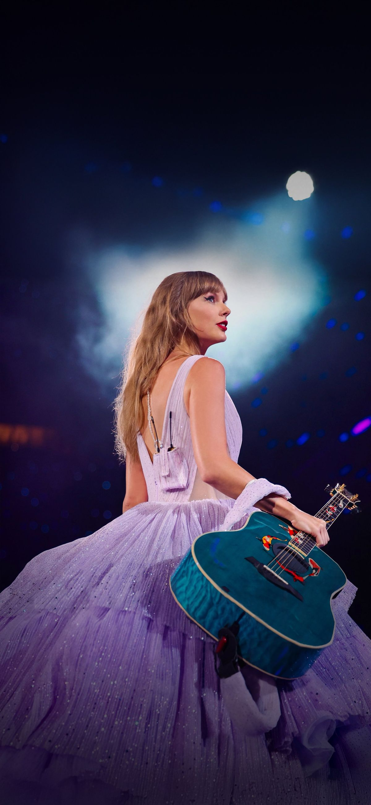
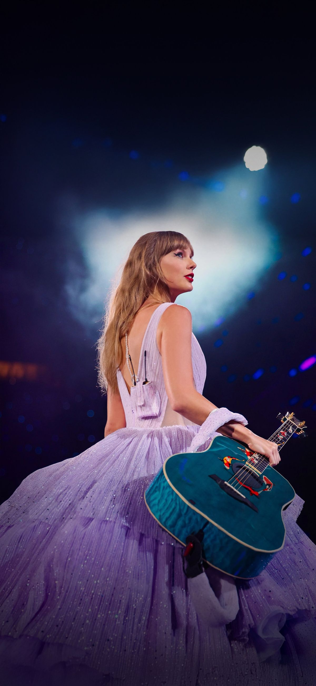

Who am I?
Name: きょんきょん（高山響子）
脳内プリンセス思考の超ポジティブハッピーガール！！！！！こんにちはっぴーが挨拶の十八番だよ！！
School/Major:東京大学理科一類
女子率8.9%の世界線！！ドイツ語選択で、結構頑張ってるよ💪
Leaders:MineCraft
マイクラはやった事がなかったけど、、、。JAVAに興味があったから迷わず選んだよ！！
Favorites
ロボコン
大学生から始めました！今はロボコンサークルに入って、一年生チームのリーダーをしているよ！年末も12/31まで作業してたくらいハードな時もあるけど、めっちゃ楽しい！！！

オーケストラ
中高ではオーケストラ部でホルンという楽器を吹いてたの！！今も高校のOGがやっているオケで演奏してるよ！

ディズニー
小学生のころから大好きで、今はディズニーを愛する者たちが集まるディズニーサークルに入ってるよ！
My Boom: Taylor Swift
世界の歌姫ことTaylor Swift！！！
過去にGrammy賞を14個も受賞！！！
沢山の勇気と元気をもらってるの！！！

 
